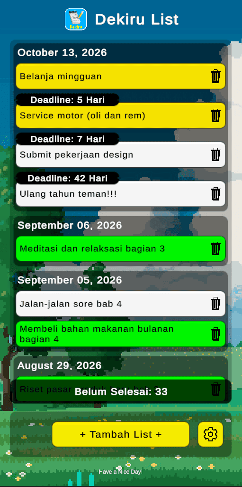
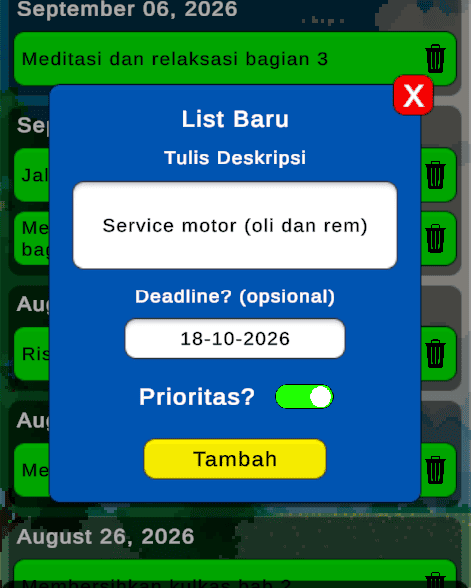
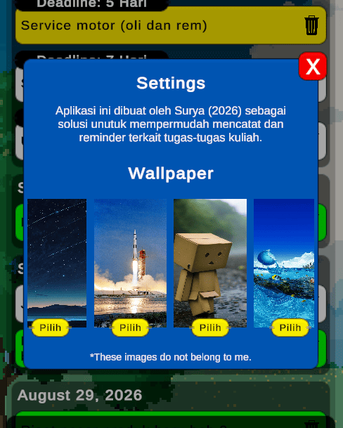
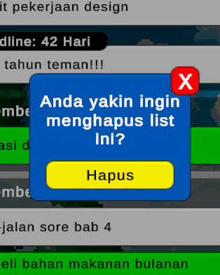
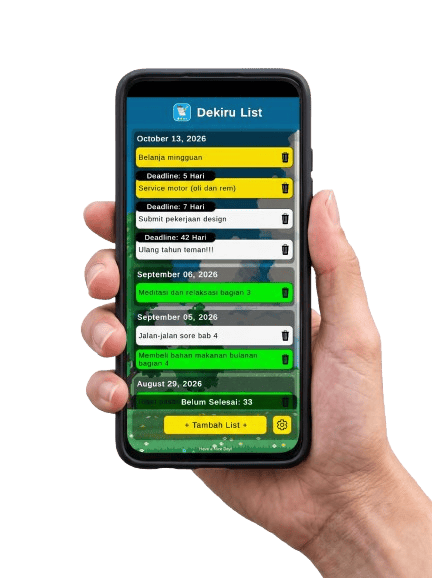

Dekiru

Forgetting Something?
Get This Thing.
Dekiru adalah aplikasi to do list simple untuk Android. Tulis tugas, atur pengingat, dan lihat apa yang harus dilakukan selanjutnya. Tidak menggunakan fitur yang tidak perlu, hanya yang penting untuk membantu Anda tetap produktif. Nothing frustrating! Make it simple, Dekiru.
Make it simple, Dekiru. A to-do list that just works.
Riwayat List
Lihat semua tugas yang telah selesai & belum selesai, kapan deadlinenya, dan mana yang prioritas (warna kuning). Tidak ada yang hilang, semuanya tercatat & dikelompokkan dengan rapi berdasarkan tanggal dibuatnya.

Tambah List
Tambahkan tugas baru dengan mudah, ketik kapan deadlinenya, dan tandai apakah prioritas. Semua dalam satu tempat, tanpa ribet.

Kustomisasi Wallpaper
Pilih wallpaper yang sesuai dengan mood Anda. Dekiru hadir dengan 7 pilihan wallpaper yang bisa dipilih sesuai keinginanmu!

Hapus List
Hapus tugas yang sudah selesai atau tidak relevan lagi dengan mudah. Dekiru memberikan kemudahan untuk mengelola daftar tugas Anda tanpa repot.
Ingin mulai planning kegiatan agar hidup lebih terstruktur? Langsung saja!
Download Dekiru sekarang. Aplikasi to-do list yang tentunya sangat simple, tanpa fitur tidak penting dan berat. Aku jamin deh!
